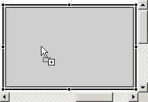
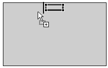

The FlowLayout layout manager arranges components in a left-to-right flow, with wrapping lines. The advantages of the flow layout manager include its ease of use, and the guarantee that each component can be seen.
The FlowLayout layout manager (java.awt.FlowLayout) dynamically sizes each component according to its preferred size. It positions components so that they are evenly spaced. Flow layouts are typically used to arrange buttons in a panel. It will arrange buttons left to right until no more buttons fit on the same line. Each line is centered by default, unless alignment is set to left or right.
FlowLayout is the default layout manager for a JPanel.
- To add a component to a FlowLayout:
- Select a component from the palette.
- Drag the cursor over the container using FlowLayout.
- When you drop this first bean you will see the drop cursor, and a rectangle
just inside the container's boundaries as you drag the loaded cursor over
it. This target feedback is drawn even on a populated container.

- If the container already includes a component, a black bar gives visual
feedback when a second component is dropped because it can be dropped with
a position relative to the existing components.

- When you drop this first bean you will see the drop cursor, and a rectangle
just inside the container's boundaries as you drag the loaded cursor over
it. This target feedback is drawn even on a populated container.
- To reorder components in FlowLayout, do one of the following steps:
- In the Design view, click and drag a component to a new position in the FlowLayout. The black bar gives visual feedback about the new position for the component.
- In the Java Beans view, click and drag a component and move it above or below another component. Because FlowLayout determines behavior by the order of the add() methods, the Design view will reflect the reordering.
- You can explicitly set the position of a component using an index as an argument to the add() method.
When you reorder a component, you are actually changing the order in which it is added to its parent container. This can be seen by the calls to the add (Component, Object) method for the JPanel class:this.add(getJLabel(), null); this.add(getJButton(), null);
- To specify the alignment of the flow layout, set the alignment property
for the FlowLayout to one of the following options:
- LEFT - indicates that each row of components should be left-justified
- CENTER - indicates that each row of components should be centered
- RIGHT - indicates that each row of components should be right-justified

- To set the spacing between components in the FlowLayout, give values
for the following FlowLayout properties:
- horizontal gap - specifies the distance in pixels between components in the same row
- vertical gap - specifies the distance in pixels between rows of components